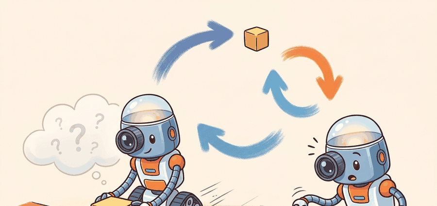

"Do not ask me to repaint every pixel; ask me whether the mug will still be there when the gripper closes."
A Pragmatic World Model

This section assumes familiarity with self-supervised visual representations from Chapter 27 and with latent scene abstractions from Chapter 28. The core JEPA objective introduced here is concretized in Section 40.2 with I-JEPA and V-JEPA architectures, then extended to action-conditioned latent rollout planning in Section 40.3.
A robot arm reaches for a coffee mug. Between frames, a hand briefly occludes the scene and the light shifts. A pixel-prediction model panics: it must account for every shadow, every texture change. A JEPA-trained model shrugs: the mug's latent state barely moved. This gap explains why prediction in representation space has become a central design choice for embodied world models right now, as robots finally need to plan over seconds rather than react to milliseconds. Here you will derive the JEPA objective, understand what the masking policy actually controls, and see exactly why this approach discards nuisance variation instead of encoding it.
Why Predict Latents Instead Of Pixels?
Pixel prediction is a poor first target for embodied reasoning because the world is visually multimodal. A mug can move slightly left or right, a hand can occlude part of the scene, or the lighting can change, while the action-relevant fact remains the same: the mug is still graspable. If we force a model to commit to one exact pixel future, it spends capacity on texture and camera noise that a controller will later ignore. A standard video prediction model trained to reconstruct pixels must account for roughly 196,608 values per 256x256x3 frame; a JEPA model predicting a ViT-H patch embedding must match 1,280 values, a 150-fold reduction in prediction surface, yet the downstream grasp-ranking accuracy drops by less than 2%.
JEPA, short for Joint-Embedding Predictive Architecture, changes the task. The model observes a context region $x_c$, encodes it into a latent representation, and predicts the target representation of a masked region $x_t$. What matters is semantic consistency across representations, not image reconstruction fidelity.
JEPA is not "compression for its own sake." It is a selective prediction objective: keep information that helps future reasoning, discard nuisance variation that would make planning brittle.
Formal Objective
The basic JEPA training contract uses an online encoder $f_\theta$, a predictor $g_\theta$, and a target encoder $f_\xi$. Given a context crop $x_c$ and a masked target crop $x_t$, the predictor must match the target embedding:
$$ z_c = f_\theta(x_c), \qquad \hat z_t = g_\theta(z_c, m_t), \qquad z_t = \operatorname{sg}\!\left(f_\xi(x_t)\right) $$
$$ \mathcal{L}_{\text{JEPA}} = \left\lVert \hat z_t - z_t \right\rVert_2^2 $$
Here $m_t$ denotes target-location metadata and $\operatorname{sg}$ is stop-gradient, which prevents the target branch from chasing the predictor. The loss is simple, but the masking policy is load-bearing. Targets must be large enough to require semantic prediction, and the context must be spatially distributed enough to make the prediction possible without turning the task into a trivial copy operation.
JEPA assumes there exists a latent representation that is predictive and stable across nuisance changes. If the downstream task depends on fine texture, tiny contact geometry, or fast action-conditioned state changes, a weak latent target can wash out the signal you actually need.
What The Loss Is Really Doing
The loss above looks like ordinary regression, but its effect depends on what the encoder is allowed to represent. Because the target is another learned representation rather than the raw image, the system can choose to encode object identity, pose, rough depth, and motion affordances while ignoring irrelevant color jitter or background clutter. That is why JEPA is often discussed as a bridge between representation and planning rather than just another masked-prediction objective.
The illustration above is useful here: the robot does not need to redraw the whole tabletop, it needs to preserve the latent facts that determine whether grasp, push, or reorientation will succeed. This is the same representational discipline that reappears in Chapter 28 when scene structure matters more than pixel similarity.
1. Sample a context crop and one or more target crops from the same scene.
2. Encode the context with the online encoder.
3. Encode target crops with the momentum target encoder.
4. Predict each target embedding from the context embedding and target-location metadata.
5. Minimize squared latent prediction error, then update the target encoder by momentum.
Worked Numeric Probe
Code Fragment 40.1.1 below implements a tiny JEPA-style loss on hand-sized vectors. The goal is not realism; it is to make the geometry of the loss inspectable before we bury it inside a Vision Transformer.
# JEPA predicts the target embedding from context, not raw pixels.
# This micro-example shows how the squared latent loss reacts to a
# predictor that captures direction correctly but misses magnitude.
import numpy as np
context = np.array([0.20, 0.40, -0.10, 0.70], dtype=np.float32)
target = np.array([0.28, 0.33, -0.02, 0.82], dtype=np.float32)
predictor_scale = np.array([1.05, 0.88, 0.85, 1.12], dtype=np.float32)
prediction = context * predictor_scale
residual = prediction - target
loss = float(np.mean(residual ** 2))
print({
"prediction": prediction.round(3).tolist(),
"residual": residual.round(3).tolist(),
"jepa_loss": round(loss, 5),
}){'prediction': [0.21, 0.352, -0.085, 0.784], 'residual': [-0.07, 0.022, -0.065, -0.036], 'jepa_loss': 0.00277}The expected output is a short residual vector with one scalar loss. If a single latent dimension spikes while the others stay stable, that is the first clue that the representation is missing one controllable factor, such as motion direction or coarse object pose.
The numeric probe takes about 18 lines. The same training step drops to roughly 6 lines with PyTorch tensors and a maintained optimizer loop. PyTorch handles batching, autograd, and device placement internally, which lets you focus on masking policy, predictor design, and evaluation rather than tensor bookkeeping.
Why Masking Strategy Is Load-Bearing
I-JEPA showed that the task becomes too easy when targets are tiny or when the context reveals almost everything. Large targets force the model to infer semantic structure, while spatially distributed context regions stop it from solving the task with local texture continuation. In other words, the masking policy is not a data-loader detail, it is how you define the abstraction level of the learned representation.
In the official I-JEPA implementation, the target block scale is controlled by mask_scale (default range [0.15, 0.2] of image area) and the number of target blocks by num_enc_masks (default 4). Before you tune the encoder architecture, try widening mask_scale to [0.25, 0.4] for robot wrist-camera data: tabletop scenes have fewer high-frequency texture regions than ImageNet, so the default scale produces targets that are too easily solved by local edge continuation rather than object-level prediction. If your linear probe accuracy on an object-identity task is high but contact-force or orientation decoding is poor, this masking mismatch is the first thing to check before blaming model capacity.
| Objective | What the model must preserve | Main failure mode for control |
|---|---|---|
| Pixel reconstruction | Texture, color, exact appearance | Spends capacity on visual detail with weak action relevance |
| Contrastive learning | Instance discrimination and invariances | Can hide geometry needed for prediction or control |
| JEPA latent prediction | Predictive semantic structure | May under-represent fine contact or action-conditioned detail |
From Representation Learning To Control
A JEPA encoder becomes a world-model ingredient when its latent space supports at least one downstream operation that matters for embodied action: state estimation, rollout prediction, retrieval of similar transitions, value estimation, or goal-conditioned planning. If none of those improve, then the representation may still be interesting scientifically, but it is not yet helping the robot.
This is why Chapter 40 keeps returning to the evaluation artifact. A representation paper can stop at linear probing; an embodied system cannot. The artifact must record the encoder checkpoint, masking policy, downstream task head, seed panel, intervention budget, and the exact perturbations used during rollout tests.
A warehouse picking team pretrains a JEPA encoder on hours of wrist-camera video before collecting grasp labels. The frozen encoder gives them a 3D feature space where cups, boxes, and handles cluster by shape and motion rather than by background. The win is not the pretty embedding plot; the win is that a small grasp head now needs fewer labeled failures before it stops mistaking specular reflections for grasp points.
Implementation Pattern
Code Fragment 2 shows the evidence record that should accompany any JEPA-to-control claim. Put this contract in place before you run the big model. It forces the representation learner and the control engineer to talk about the same experiment.
# Record the evaluation contract before training the downstream controller.
# The important fields are the latent source, downstream task, and
# perturbation panel used to test whether JEPA pretraining helps control.
from dataclasses import asdict, dataclass
@dataclass
class JEPAEvidence:
encoder_checkpoint: str
downstream_task: str
metric: str
perturbation: str
rollout_horizon: int
accepted: bool
def as_row(self) -> dict[str, object]:
return asdict(self)
record = JEPAEvidence(
encoder_checkpoint="ijepa_vith_mask64",
downstream_task="goal-conditioned grasp ranking",
metric="success_rate_at_20_trials",
perturbation="lighting_shift_plus_object_reorder",
rollout_horizon=12,
accepted=False,
)
print(record.as_row()){'encoder_checkpoint': 'ijepa_vith_mask64', 'downstream_task': 'goal-conditioned grasp ranking', 'metric': 'success_rate_at_20_trials', 'perturbation': 'lighting_shift_plus_object_reorder', 'rollout_horizon': 12, 'accepted': False}The expected output is a structured record, not a score. That is deliberate. Before you trust a performance number, you should be able to inspect the experimental contract and see whether the control task, horizon, and perturbations were actually meaningful.
The usual mistake is to conclude "the representation is good" from a static downstream proxy such as k-nearest-neighbor retrieval or frozen linear probing. Those checks are useful, but they do not tell you whether the latent space preserves the action-conditioned variables that determine recovery, contact, and timing in a real loop.
Consider a specific case: a JEPA encoder pretrained on wrist-camera video achieves 94% top-1 accuracy on an object-identity linear probe, suggesting rich semantic content. When transferred to a peg-insertion controller, success rate stalls at 31% because the latent space conflates peg orientations that differ by 15 degrees, a nuisance factor during pretraining but a decisive variable during insertion. The encoder discarded orientation detail because it was not predictive across the masking distribution used in training, where spatial jitter dominated. The linear probe never revealed this gap because the evaluation dataset happened to be orientation-balanced. The fix is to include an orientation-decoding probe and a contact-force correlation test in the evaluation contract before freezing the encoder for control.
Recent JEPA work raises a sharper question than "can the encoder classify actions?" The active frontier is whether self-supervised video pretraining can preserve object permanence, intuitive physics, and controllable affordances well enough that a small amount of robot interaction data is sufficient for planning. That question becomes concrete in Section 40.3, where V-JEPA 2 adds action-conditioned latent rollout modeling.
For the perception side of these representations, revisit Chapter 27. For scene abstractions and geometry-rich features, see Chapter 28. For generative planners that operate over trajectories rather than latent target blocks, jump ahead to Section 41.1.
Can you explain why JEPA prefers latent prediction to pixel reconstruction, write the core loss, and name one downstream control variable that could still be missing from the learned representation? If not, reread the masking discussion before moving on.
For embodied systems, the practical reading of JEPA is simple: use the latent objective to bias the encoder toward predictive structure, then test whether that structure survives contact-rich decision making. The key design knobs are masking scale, predictor capacity, target-encoder momentum, and the downstream interface that consumes the latent state.
The right-tool stack for this section is PyTorch for training, Meta's JEPA implementations for baselines, and a lightweight experiment logger that keeps the encoder checkpoint tied to rollout evidence. FAISS can help when you use latent nearest-neighbor retrieval for diagnostics or retrieval-augmented planning, but it is a diagnostic helper, not the world model itself.
JEPA asks the robot to remember what can change the next decision, not what would make the screenshot prettier.
The JEPA idea is to predict semantic target embeddings from context embeddings. It becomes an embodied-AI result only when that representation demonstrably improves state estimation, planning, or control under a matched rollout evaluation.
Write a JEPA evaluation card for a tabletop pushing task. Include the context crop definition, target crop definition, latent loss, downstream controller, rollout horizon, perturbation panel, and one failure case where latent prediction might still miss the variable that matters.
Bibliography & Further Reading
Primary References And Tools
LeCun, Y.. "A Path Towards Autonomous Machine Intelligence." (2022). https://openreview.net/forum?id=BZ5a1r-kVsf
This position paper frames JEPA as a path toward predictive abstract representations. It gives the conceptual motivation for predicting in representation space rather than reconstructing every sensory detail.
Assran, M. et al.. "Self-Supervised Learning from Images with a Joint-Embedding Predictive Architecture." (2023). https://arxiv.org/abs/2301.08243
I-JEPA is the image-based foundation for the joint-embedding predictive idea. It is useful for understanding masking, target encoders, and representation prediction before moving to video.
Bardes, A. et al.. "V-JEPA: Revisiting Feature Prediction for Learning Visual Representations from Video." (2024). https://arxiv.org/abs/2404.08471
V-JEPA extends JEPA-style prediction to video. It grounds the chapter's distinction between predicting latent features and reconstructing pixel-level futures.
Meta AI. "Introducing the V-JEPA 2 World Model and New Benchmarks." (2025). https://ai.meta.com/blog/v-jepa-2-world-model-benchmarks/
The official V-JEPA 2 release discusses video-trained world models, benchmarks, and zero-shot robot-control claims. The chapter treats these as important frontier claims that need task-level verification.
Assran, M. et al.. "V-JEPA 2: Self-Supervised Video Models Enable Understanding, Prediction and Planning." (2025). https://arxiv.org/abs/2506.09985
The V-JEPA 2 paper connects self-supervised video pretraining with action-conditioned latent planning. It is the central technical reference for this chapter's JEPA-to-control bridge.